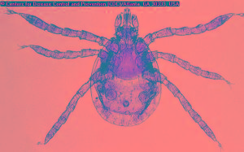
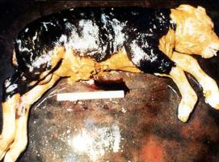
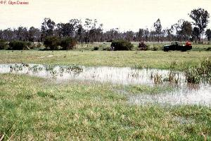

Abortion and Stillbirth (new)
{kind=link}
Introduction
A very common cause of abortion is Brucellosis, which can also infect humans. Brucellosis is an infectious disease caused by the Brucella bacteria. There are many other infectious abortions. But most labs in the country/region routinely only diagnose few causes of abortion other than Brucella (e.g. caused by bacteria or parasites such as Campylobacter, Trichomonas). However, close observation and submitting a full history together with the samples will help alert the lab on the possible involvement of other abortion agents (e.g. Rift Valley Fever).
Severe general infections of the pregnant dam that cause high fever such as Anaplasmosis, East Coast Fever, Pox and acute Mastitis may also lead to abortion. Sometimes abortion can also have non-infectious causes.
Abortion can occur at very different stages of pregnancy. Very early abortion when the embryo is not yet fully developed and is invisible to the naked eye is called early embryonic death. Most cases of abortion occur later during pregnancy; the foetus looks like a miniature calf but is not developed enough to live. In stillbirth the mother expels a fully developed calf that died before it was born (clear sign: it does not even attempt to breathe).
Single isolated cases of abortion can occur for many reasons and do not always require laboratory diagnosis. But when several animals abort one should consult a veterinarian, laboratory or Animal Health Assistant and request a diagnosis, especially if abortions occur around the same time.
| SPREAD: TO AVOID SPREAD OF ABORTION to other animals the foetus and all abortion/stillbirth materials (incl. liquid) must be removed and disposed of by burning or deep burying (deep enough to protect from dogs and other scavengers). If the abortion has occurred inside a stable the floor must be disinfected. If the stable has a compacted earth floor remove the top layer of the floor and dispose of safely. Immediately separate the abortion animal from the rest of the herd! |
| DANGER: MOST ABORTIONS ARE INFECTIOUS AND VERY DANGEROUS FOR HUMANS. Collecting abortion samples is best done by a veterinarian or an Animal Health Assistant. It is often necessary to also collect a blood sample from the animal that has aborted. When handling the expelled foetus and placenta after an abortion, make sure that you wear plastic gloves and do not touch any of the tissues and liquids with bare hands. If you have accidentally touched abortion materials immediately wash and disinfect your hands. All tissue and samples to be taken to a laboratory must be safely stored in sealed plastic bags with no leakage (use double plastic bags or put plastic bags in a waterproof container). |
General warning:
Retained placenta is common after the abortion and often requires antibiotic treatment. Trying to forcibly remove the placenta without protective gloves and clothing exposes humans to severe infection risks and may also harm the animal. Do not foster calves, kids or lambs onto dams which have aborted!
Milk from aborted animals is very often highly infectious for the young suckling animals and for humans.
Abortion organisms are mostly spread via uterine discharges, the afterbirth and the expelled foetus at abortion. Removing and burying or burning abortion materials from the stable or the Boma will prevent the organisms from infecting more pregnant animals. It is also important to disinfect the place where the abortion happened. Never touch abortion materials directly with your bare hands, always use protective gloves.
There are many different names for abortion in local languages:
Embua: kuvuna / Luo: tuo bwogo / Kikuyu: muhono, kihuna / Maasai: aibiriu, olik ibiroto / Samburu: ikiboroto / Swahili: homa ya kutupa mamba / Turkana: akiyech / Maragoli: luhusidza / Luvugusu: livure / Nandi: sutonik /
Diagnosis
Diagnosis of abortion requires professional help and laboratory examination. When you think there is an abortion problem consult a veterinarian/VO/DVO.
Laboratory diagnosis of abortion in livestock can be difficult and is not always successful. Often the aborted foetus is too decomposed or too contaminated to allow for a diagnosis. Toxic or genetic causes of abortion are very difficult to diagnose in the lab.
To confirm the presence of a particular abortion agent in a herd two blood samples should be taken from 10% of the animals that have aborted (2nd sample to be collected 2-3 weeks after 1st sample). - In lactating cattle Brucellosis can also be diagnosed from milk (see under Brucellosis).
Abortions Caused by Bacteria: Brucellosis, Salmonella, Leptospirosis, Vibriosis
Brucellosis
For complete description on Brucellosis click here.
Summary
In some countries Brucellosis has been eradicated or brought under control by a programe of blood testing, slaughter and heifer vaccination. However in most parts of East Africa there has been no control or vaccination and Brucellosis is common in both humans and animals.
Brucellosis in humans resemble Malaria, and is often mistaken as such unless identified through laboratory testing. Cure of Brucellosis in humans is a very long drawn out and expensive administration of antibiotics and much better avoided by controlling the disease in livestock.
In livestock it is not possible to treat Brucellosis. However, some cattle resist infection and a small percentage of infected cows spontaneously recover.
Cattle/sheep/goats/pigs and camels/donkeys become infected by eating the organism from abortion material, genital discharges, or contaminated pasture, food or water. Abortion occurs 2 weeks to 5 months after the initial infection and generally occurs after the 6th month of pregnancy.
Abortion due to Brucella mostly occurs during the last third of pregnancy. In unprotected herds 40% to 80% of pregnant females may abort or give birth to very weak newborns. After abortion animals give no or only little milk.
Signs of Brucellosis
- Infections may also cause still births or weak calves, retained placentas, and reduced milk yield. Usually general health is not affected in uncomplicated abortions.
- In less acute (insert dictionary) infections, cattle may give birth to a full term but weak calf, or merely show a retained placenta. Cows may become infertile due to chronic (insert dictionary) uterine infection.
- After abortion, the afterbirth doesn't come out (retained placenta). This can further develop to Mmetritis (infection of the uterus), which often causes infertility.
- In bulls, no symptoms may be seen but if they are, they may include inflammation of the testes, lack of sexual activity and possibly infertility.
- Subcutaneous (under the skin) swellings containing infected fluid may appear on the legs of infected cattle and the placenta often has a thickened leathery appearance with some discolouring
Prevention of Brucellosis
Salmonella species
For further information on Diarrhea of the young see here
Salmonella can cause disease in livestock and in humans. They cause diarrhoea and death in young suckling animals, but also diarrhoea and abortion in adult animals. In many countries Salmonella dublin is endemic in cattle and is the most common type of Salmonella causing abortions. Many other Salmonella types may be involved in individual cases. Salmonella also cause disease and abortion in sheep, goats and camels. Aborting animals may have fever and diarrhoea or show no symptoms other than abortion.
Salmonella are also very common causes of diarrhoea in young animals and chicken and can even infect eggs. Humans can get food poisoning from handling raw chicken meat and from consuming raw or undercooked eggs.
Leptospirosis
Sorurces of infection:
- Rodents act as carriers and are a source of infection
- Watercourses and standing and stagnant water (e.g. on very wet pastures) can become contaminated and be a source of infection.
- Sheep and goats may be "silent" carriers and a potential source of infection for cattle and humans.
- The infection may be transmitted via urine, milk, abortion material and during mating
Symptoms of Leptospirosis
For more information please also see Leptospirosis under zoonotic diseases
Prevention by:
- Where the vaccine is available, vaccination with a multi-valent Leptospirosis vaccine, every 6 months is recommended.
- Avoid or drain pastures with standing water.
- Sources of infection, such as contaminated water and feed should be identified and eliminated
- Rodents and other vermin should be destroyed. It should be noted that cattle may be life-long carriers of leptospirosis and remain a source of infection.
Diagnosis from Laboratory:
A combination of very wet pastures, abortions and jaundice in cattle, occasionally also skin problems is suggestive of Leptospirosis. Abundance of rodents in stables/barns/pastures strengthens this suspicion.
Campylobacter (also called Vibriosis)
For further information see under Birth and Reproduction problems
Scientific name: Campylobacter fetus venerealis and Campylobacter fetus fetus
Common names: Bovine campylobacteriosis, Genital vibriosis
This infection is a problem in cattle and sheep. Campylobacter bacteria cause early embryonic death, infertility and occasionally abortion. This is a venereal disease transmitted during mating. Infected bulls are the source of infection and most outbreaks occur after the introduction of an infected bull into a clean herd. Vibriosis is not zoonotic
- Most cases of abortion occur between 4 - 8 months of pregnancy.
- Usually there are no significant findings other than a mild inflammation of the placenta.
- Diagnosis in the lab is very difficult. Bulls penis sheath washing transported to the lab within 6-8 hours are useful for identification of infection.
- Vibriosis in sheep is evidenced by abortions in late pregnancy and stillbirths
Mode of spread
Signs of Vibriosis
Diagnosis
Prevention
Control is by:
- Vaccination
- Replacing natural mating by artificial insemination until all cows have had two pregnancies.
- The infected bull may be treated with Streptomycin injection combined with oil-based Streptomycin applied locally to the penis is possible. This treatment must be carried out on 3 consecutive days and should be applied by a trained professional. Bulls are of course susceptible to re-infection if they mate with an infected female.
- It is not necessary to treat infected cows, they generally recover spontaneously.
- In sheep the use of tetracyclines may help to prevent exposed ewes from aborting.
Abortions and infertility in cows caused by Vibriosis look exactly as those due to Trichomonas (see under Trichomonas).
Abortions Caused by Bacteria: Listeriosis, EAE, Q-Fever
Listeriosis
Signs of Listeriosis:
- Central nervous symptoms (Encephalitis, e.g. one ear hanging down) and sometimes eye infections.
- Sporadic abortion, the foetus is usually decomposed when aborted.
- The placenta is inflamed with multiple, yellow or gray coloured spots in the cotyledons; similar spots are found in the liver of the aborted foetus.
Enzootic Abortion of Ewes (EAE)
Signs of Enzooic Abortion
Diagnosis
Prevention and Control
| WARNING: Pregnant women should NOT deal with lambing ewes and goats or any aborted material from sheep and goats. Many infections, which cause abortion in sheep and goats, are transmissible to humans. Especially the agent of EAE( Chlamydophila) is capable of causing severe disease and abortion in pregnant women. - Toxoplasma, Q-Fever, Salmonella, Leptospira and Listeria can also cause disease and abortion in humans |
Q-Fever Coxiella burnetii
|  |
| View of a larval Ixodide, Dermacentor marginatus[I/] hard tick. This tick species is known to be a vector for Q-fever, which is caused by the bacteria Coxiella burnetii[I/]. |
| (c) Picture from CDC/Donated by the World Health Organization, Geneva, Switzerland
|
Mode of spread
There are two different cycles:
Symptoms of Q Fever
Diagnosis
Control
Treatment
Viral Causes: BVD, Border disease, Infectious Bovine Rhinotracheitis, Rift Valley Fever
Bovine Viral Diarrhoea (BVD)
This virus is also an important cause of diarrhea. For more information Link to Diarrhea of adults
- Early embryonic death
- Mummification of the foetus
- Abortion
- Stillbirth
- Birth of calves with congenital defects of the eye/brain
- Birth of weak calves that do not thrive, even if they reach adulthood
Border Disease
This disease only affects sheep. It is caused by a virus related to the one that causes Bovine Viral Diarrhea disease in cattle. (For more information please Link to Diarrhea of adults)
Signs of border disease
- Early foetal death with subsequent resorption (only sign: lot of barren ewes)
- Mummification, abortion or stillbirth.
- Birth of the so-called 'hairy shaker' lambs, with coarse wool over the head and neck, permanent trembling, and an abnormal skeleton. They show very poor growth rate.
Diagnosis
Prevention and Control
Infectious Bovine Rhinotracheitis
(For more information please see also under Respiratory diseases)
Rift Valley Fever
Introduction
|  |
| Aborted foetus after Rift Valley Fever |
| (c) USDA
|
|  |
| Widespread flooding causing mosquito eggs to hatch |
| (c) F. Glyn Davies
|
Mode of spread
Signs of Rift Valley Fever
- The incubation period in lambs is 12 to 36 hours. A fever of up to 41degC (106degF) may develop.
- Peracute infections occur in new-born lambs which die within hours. Acute reactions occur in older lambs and calves and occasionally in adult sheep.
- In very severe infection in calves, death may occur in 2 days after infection without their showing any clinical signs.
- A haemorrhagic syndrome was observed during the last outbreak in Kenya, affecting adult cattle.
- In its severe form, calves will develop high fever, and may vomit. Some nasal discharge may also be seen followed by prostration and mortality may reach up to 70%.
- Almost all infected pregnant sheep and camels abort within a short period and at very different stages of pregnancy. Cattle are more resistant but may also abort.
- Subacute reactions occur in adult sheep, cattle and camels. There is a low-grade fever, partial lack of appetite and general weakness. Jaundice is prominent and foul smelling diarrhoea can occur.
- In pregnant ewes the mortality and abortion rates varies from 5 - 100%. Abortion rates in pregnant camels are between 80% and 100%
Diagnosis
Prevention and Control
- Outbreaks of Rift Valley Fever generally occur after periods of prolonged and very heavy rain. Such being the case livestock owners should be aware that if long rains are excessively heavy and cause widespread flooding, an outbreak of Rift Valley Fever is likely to occur.
- Control of mosquitoes through use of insecticides, acaricides and pour-ons, movement of stock to dry areas or to higher cooler altitudes can all help in preventing the RVF outbreak from reaching your herd.
- Immunisation remains the only effective way to protect livestock but vaccination of animals with suitable RVF vaccines can only be carried out under authority of the DVS by government veterinary vaccination teams. Some live RVF vaccines can also cause abortions and should NOT be used in pregnant animals.
Treatment
Fungal Causes
Protozoal Causes: Neospora caninum and Trichosomiasis
Neospora caninum
Trichomonas fetus (Trichomoniasis)
Mode of spread
Signs of Trichomoniasis
- Cows may have a more than normal watery vaginal discharge about 2 weeks after coital infection
- Abortion may occur in early or late in pregnancy
- After abortion the placenta is often retained and there may be pus in the uterus.
- The foetus has no specific lesions.
- Inflammation of the uterus and pyometra ? a pus filled uterus
- There is irregular heat and the cow may stop coming into heat altogether
- Cows eventually clear themselves of infection and the uterus is usually normal 2-6 months after infection
Bulls show no symptoms but once infected tend to remain permanent carriers.
Diagnosis
Diseases with similar symptoms
Prevention and Control
Recommended treatment
Non-infectious Causes of Abortion
Physical
Nutritional deficiencies
- Iodine deficiency has been associated with stillbirths and weak newborn calves. Lack of Iodine in the soil is known for certain areas of Kenya /East Africa
- Feeding of kale to livestock.
- Application of human sewage sludge to pasture.
- Selenium/Vitamin E deficiency has been associated with bovine abortions, soils in some parts of Kenya are Selenium deficient.
- Vitamin A deficiency, which can occur towards end of the dry period and during drought, may also interfere with pregnancy.
Toxic (poisons)
.
Signs of nitrate/nitrite poisoning
- Severe difficulty in breathing,
- Muscle twitching
- Brown mucous membranes and blood are likely to be present
Genetic
Review Process
1. William Ayako, KARI Naivasha. Aug -Dec 2009
2. Hugh Cran, Practicing Veterinarian Nakuru. March ? Oct 2010
3. Review workshop team. Nov 2 - 5, 2010
- For Infonet: Anne, Dr Hugh Cran
- For KARI: William Ayako - Animal scientist, KARI Naivasha
- For DVS: Dr Josphat Muema - Dvo Isiolo, Dr Charity Nguyo - Kabete Extension Division, Mr Patrick Muthui - Senior Livestock Health Assistant Isiolo, Ms Emmah Njeri Njoroge - Senior Livestock Health Assistant Machakos
- Pastoralists: Dr Ezra Saitoti Kotonto - Private practitioner, Abdi Gollo H.O.D. Segera Ranch
- Farmers: Benson Chege Kuria and Francis Maina Gilgil and John Mutisya Machakos
- Language and format: Carol Gachiengo
4. Updating by Dr Hugh Cran, Practicing Veterinarian, Nakuru, Kenya, Sept 2011
5. Reorganising, review and updating May 2013 by: Dr Mario Younan (DVM, PhD), Regional Technical Advisor for VSF-Germany, working in East Africa since 1995
Information Source Links
- Barber, J., Wood, D.J. (1976) Livestock management for East Africa: Edward Arnold (Publishers) Ltd 25 Hill Street London WIX 8LL. ISBN: 071310063X
- Blood DC, Henderson JA, Radostits OM (1983): Veterinary medicine: A textbook of the diseases of cattle, sheep, pigs & horses, 6th Edition. Bailliere and Tindall, 24-28 Oval Road, London NW1 7DX, UK. ISBN NO: 0-7020- 0988- 1
- Cabell, Emma 2007: In Practice Journal of Veterinary Postgraduate Clinical Study Volume 29 No 8 September 2007. Abortion in Cattle: causes and investigation ISSN no 0263/841 X
- Force, B. (1999). Where there is no Vet. CTA, Wageningen, The Netherlands. ISBN 978-0333-58899-4
- Handbook on Animal Diseases in the Tropics 4th Edition Sewell & Brocklesby
- Henning MW (1956): Animal Diseases in South Africa, 3rd Edition. Onderstepoort Veterinary Institute, Central News Agency Ltd., Pretoria, South Africa
- Hunter, A. (1996). Animal health: General principles. Volume 1(Tropical Agriculturalist) - Macmillan Education Press. ISBN: 0333612027
- Khan CM and Line S (2005): The Merck Veterinary Manual, 9th Edition, Merck & Co Inc Whitehouse Station NJ USA. ISBN 0-7020-1502-4
- Martin W B 1983 (Editor):Diseases of Sheep ISBN 0- 632- 01008-8
- Pritchard Geoff 1990: Diagnosing the cause of bovine abortion. In Practice Journal of Veterinary Postgraduate Clinical Study Volume 12 no 3 May 1990 ISSN No 02 63/841 X
- Q Fever booklet, CEVA Sante Animal, France
- lowey, R.W. (1986). A Veterinary book for dairy farmers: Farming press limited Wharfedale road, Ipswich, Suffolk IPI 4LG